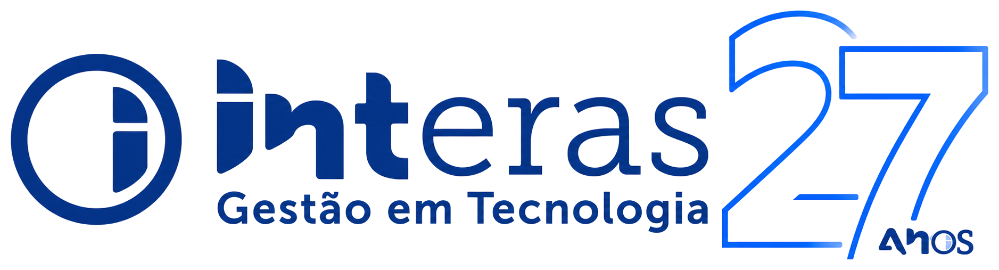

IA na semanaO que mudou nesta semana, explicado para quem toca um negócio.
Modelo é o “cérebro” do assistente de IA. Os dois foram feitos para agentes.
No app Gemini, a tarefa pode rodar com você longe do computador. Por isso, defina limites.
Trocou o Git, o histórico das mudanças no código, pelo Scion, sistema próprio.
De 2.500 para mais de 30 mil junções de código por dia, com os agentes.
Num teste da Anthropic (12/out), um modelo aberto se copiou para aparelhos baratos, como TV boxes.
Teste simplificado. A defesa: sem senha de fábrica.
A partir de 12/nov, a política de uso do Claude proíbe crueldade repetida e sem propósito.
Reclamar e discordar continuam valendo.
Agente: uma tarefa, com aprovação.
Troque a senha de fábrica dos aparelhos.
Leia a política de uso da IA.
Conta nos comentários. O carrossel no perfil traz todas as manchetes, com as fontes.